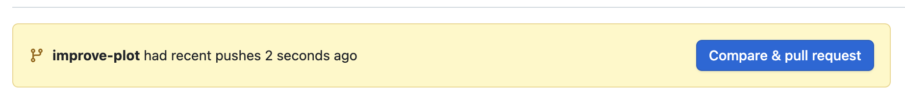

19 Pull requests
üéØ Goal: By the end of this chapter, you‚Äôll have understand the basic process of reviewing and merging pull requests in Github.
19.1 Suggest and Review Changes with Pull Requests
Pull Requests (often abbreviated to just “PR” in the programming world) are GitHub’s way of saying, “Hey, I’ve made some changes. Can we look them over and maybe merge them into the main project?”
Even if you’re working solo, they’re a great habit because they give you a space to:
- Review your changes before merging.
- Track a discussion about the changes you’re making with your collaborators.
- Ensure everything looks good before merging.
We’ll walk through the basic pull request workflow below.
19.2 Step 1: Create a Branch and push to Github
First, make sure you’re on a new branch (just like we did in Working with Feature Branches)
Create a new feature branch by running:
git checkout -b improve-plotMake some edits to your plot file (e.g., tweak a plot or add some new text)
Stage and commit the changes:
git add filename.qmd git commit -m "Improve plot aesthetics"Push the branch to GitHub:
git push -u origin improve-plot
19.3 Step 2: Open pull request (PR) on GitHub
Instead of merging our changes from the command line like we did in the last chapter, we’re going to handle the merging process in Github so we can take advantage of some of the nice features it offers for code reviews.
Once your branch is on GitHub, you’ll see a banner like

To begin the pull request process:
- Click the blue “Compare & pull request” button! (Tip: The banner sometimes will not show up when there isn’t a new commit on the branch. You can also find this button under the “Pull requests” tab at the top.)
On the Open a pull request page, do the following:
Review what’s changing: underneath the form at the top of the page, Github will show you a list of commits and the files on the feature branch that are different than the
mainbranch. These are the changes you will be merging into the main project. Before making the PR, you’ll want to make sure that all the changes showing are intentional and ready to merge.Add a title description: After confirming your changes are ready to merge, add a title to the PR and description with more details about what you’re changing. The description and title should let others on your team know exactly what the changes are that they will be reviewing. See an example below.
Note: Github has added a lot of features to help pre-fill out the title based on what it thinks your PR is. Sometimes it’s accurate, sometimes it’s not so always double-check.
Click the Create pull request button.
Now others (or future you) can review the change.
19.3.1 Step 3: review and discuss changes
If you’re collaborating, your teammates can:
- Leave comments on specific lines
- Ask questions or suggest edits
- Approve or request changes
Even if you’re working alone, reviewing your changes with “fresh eyes” before merging can help you catch mistakes.
Sometimes your collaborators will suggest changes to files or code before “approving” the code to be merged. During the pull review process, you’ll discuss your changes and make sure everyone is on board for your code changes before incorporating them into the main project. This process is called a code review in the programming world and it’s an important part of the development process, especially for user-facing, live projects.
19.3.2 Step 4: Merge the Pull Request
Once everything looks good, you can proceed to merging your branch.
To merge in your branch:
Click dropdown icon next to Merge pull request and make sure Create a merge commit is selected.
Click Merge pull request.
If prompted, type a commit message, or accept the default message in the description box.
Click Confirm merge. GitHub will combine the branch into
main.Now go back to your terminal tab in your RStudio project, and run:
git checkout main
Now that you’re back on your main branch, you will also need to “pull down” the changes you made to your plot and merged into your main branch with your PR.
Pull the merged PR changes:
Make sure you’re on your
mainby runninggit branch. If you aren’t, run the following to get to there:git checkout mainOnce you’ve confirmed you’re on
main, pull your changes by running:git pull
Now when you navigate to your 01-plot.qmd file, you should see your plot improvements.
19.4 Cleanup old branches
Since we have merged our feature branch, let’s remember to keep our repository clean by deleting the local and remote versions of our merged branches.
First, we’ll delete the branch locally, by running:
git branch -d improve-plotNext, we’ll delete the remote branch on Github, by running:
git push origin --delete improve-plot
19.5 Remember: Keep your main branch up to date
After merging a PR (especially someone else’s), sync your local main branch by doing the following in your terminal.
First, navigate to the
mainbranch by running:git checkout mainThen, pull the most recent changes:
git pull
Now you have all the latest changes from GitHub.
19.6 üéâ Final Words
Congratulations! You’ve made it to the end of the Intro to Git guide.
You’ve now learned:
- How to setup Git
- How to make a Github repository
- How to make a Git-tracked project
- How to take a snapshot of your project and push it to Github
- How to make a shared project in Github
- How to make a feature branch
- How to merge a feature branch into your main project
- How to make a pull request
You’ve built a strong foundation for using version control in your future projects, both solo and with others.
Remember: Practicing these skills is key to improving and getting comfortable – the more you use git to track project work, the more natural it will feel.
If you forget how to do something or get stuck you may find the quick reference and troubleshooting appendices helpful.
Good job! üöÄ